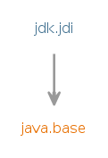

Module jdk.jdi
The Java™ Debug Interface (JDI) is a high level Java API providing information useful for debuggers and similar systems needing access to the running state of a (usually remote) virtual machine.
JDI provides introspective access to a running virtual machine's state, Class, Array, Interface, and primitive types, and instances of those types.
JDI also provides explicit control over a virtual machine's execution. The ability to suspend and resume threads, and to set breakpoints, watchpoints, etc. Notification of exceptions, class loading, thread creation, etc. The ability to inspect a suspended thread's state, local variables, stack backtrace, etc.
JDI is the highest-layer of the Java Platform Debugger Architecture (JPDA).
This module includes a simple command-line debugger, jdb.
Global Exceptions
This section documents exceptions which apply to the entire API and are thus not documented on individual methods.
NOTE: The exceptions below may be thrown whenever the specified conditions are met but a guarantee that they are thrown only exists when a valid result cannot be returned.Any method on a
Mirrorthat takes aMirroras an parameter directly or indirectly (e.g., as a element in aList) will throwVMMismatchExceptionif the mirrors are from different virtual machines.Any method which takes a
Objectas an parameter will throwNullPointerExceptionif null is passed directly or indirectly -- unless null is explicitly mentioned as a valid parameter.
Any method on
ObjectReference,ReferenceType,EventRequest,StackFrame, orVirtualMachineor which takes one of these directly or indirectly as an parameter may throwVMDisconnectedExceptionif the target VM is disconnected and theVMDisconnectEventhas been or is available to be read from theEventQueue.Any method on
ObjectReference,ReferenceType,EventRequest,StackFrame, orVirtualMachineor which takes one of these directly or indirectly as an parameter may throwVMOutOfMemoryExceptionif the target VM has run out of memory.Any method on
ObjectReferenceor which directly or indirectly takesObjectReferenceas parameter may throwObjectCollectedExceptionif the mirrored object has been garbage collected.Any method on
ReferenceTypeor which directly or indirectly takesReferenceTypeas parameter may throwObjectCollectedExceptionif the mirrored type has been unloaded.
- Tool Guides:
- jdb
- Module Graph:
- 
- Since:
- 9
- See Also:
- Java Platform Debugger Architecture (JPDA)
{kind=link}
-
-
Packages
Exports Package Description com.sun.jdi This is the core package of the Java Debug Interface (JDI), it defines mirrors for values, types, and the target VirtualMachine itself - as well bootstrapping facilities.com.sun.jdi.connect This package defines connections between the virtual machine using the JDI and the target virtual machine.com.sun.jdi.connect.spi This package comprises the interfaces and classes used to develop newTransportServiceimplementations.com.sun.jdi.event This package defines JDI events and event processing.com.sun.jdi.request This package is used to request that a JDI event be sent under specified conditions.
-
Services
Provides Type Description Connector Uses Type Description Connector A method of connection between a debugger and a target VM.TransportService A transport service for connections between a debugger and a target VM.
-